가스기사 (2020-09-26 기출문제)
1과목: 가스유체역학
1. 레이놀즈구사 106이고 상대조도가 0.0⑤인 원관의 마찰계수 f는 0.03이다. 이원관에 부차손실계수가 6.6인 글로브 밸브를 설치하였을 때, 이 밸브의 등가길이(또는 상당길이)는 관 지름의 몇 배인가?
- 25
- 55
- 220
- 440
(정답률: 60%)

2. 압축성 유체의 기계적 에너지 수지식에서 고려하지 않는 것은?
- 내부에너지
- 위치에너지
- 엔트로피
- 엔탈피
(정답률: 69%)
3. 압축성 이상기체(compressible ideal)의 운동을 지배하는 기본 방정식이 아닌 것은?
- 에너지방정식
- 연속방정식
- 차원방정식
- 운동량방정식
(정답률: 73%)
4. LPG 이송 시 탱크로리 상부를 가압하여 액을 저장탱크로 이송시킬 때 사용되는 동력장치는 무엇인가?
- 원심펌프
- 압축기
- 기어펌프
- 송풍기
(정답률: 73%)
5. 마하수는 어느 힘의 비를 사용하여 정의되는가?
- 점성력과 관성력
- 관성력과 압축성 힘
- 중력과 압축성 힘
- 관성력과 압력
(정답률: 63%)
6. 수은 - 물 마노메타로 압력차를 측정하였더니 50cmHg였다. 이 압력차를 mH2O로 표시하면 약 멀마인가?
- 0.5
- 5.0
- 6.8
- 7.3
(정답률: 62%)
7. 산소와 질소의 채적비가 1 : 4인 조성의 공기가 있다. 표준상태(0℃, 1기압)에서의 밀도는 약 몇 kg/m3 인가?
- 0.54
- 0.96
- 1.29
- 1.51
(정답률: 56%)
8. 다음 단위 간의 관계가 옳은 것은?(오류 신고가 접수된 문제입니다. 반드시 정답과 해설을 확인하시기 바랍니다.)
- 1N = 9.8kgㆍm/s2
- 1J = 9.8kgㆍm2/s2
- 1W = 1kgㆍm2/s3
- 1Pa = 105kgㆍm/s2
(정답률: 63%)
9. 송풍기의 공기 유량이 3m3/s 일 때, 흡입 쪽의 전압이 110kPa, 출구 쪽의 정압이 115kPa이고 속도가 30m/s이다. 송풍기에 공급하여야 하는 축동력은 얼마인가? (단, 공기의 밀도는 1.2kg/m3이고, 송풍기의 전효율은 0.8이다.)
- 10.45kW
- 13.99kW
- 16.62kW
- 20.787kW
(정답률: 30%)
10. 평판에서 발생하는 츨류 경계층의 두께는 평판선단으로부터의 거리 x 와 어떤 관계가 있는가?
- x에 반비례한다.
- x1/2에 반비례한다.
- x1/2에 비례한다.
- x1/3에 비례한다.
(정답률: 58%)
11. 관 내의 압축성 유체의 경우 단면적 A와 마하수 M, 속도 V 사이에 다음과 같은 관계가 성립한다고 한다. 마하수가 2 일 때 속도를 0.2% 감소시키기 위해서는 단면적을 몇 % 변화시켜야 하는가?
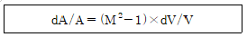
- 0.6% 증가
- 0.6% 감소
- 0.4% 증가
- 0.4% 감소
(정답률: 56%)
12. 정체온도 Ts, 임계온도 Tc, 비열비를 k라 할 때 이들의 관계를 옳게 나타낸 것은?
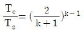
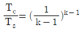
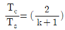
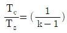
(정답률: 51%)
13. 유체 속에 잠긴 경사면에 작용하는 정수력의 작용점은?
- 면의 도심보다 위에 있다.
- 면의 도심에 있다.
- 면의 도심보다 아래에 있다.
- 면의 도심과 상관없다.
(정답률: 66%)
14. 관 속을 충만하게 흐르고 있는 액체의 속도를 급격히 변화시키면 어떤 현상이 일어나는가?
- 수격현상
- 서어징 현상
- 캐비테이션 현상
- 펌프효율 향상 현상
(정답률: 69%)
15. 점성력에 대한 관성력의 상태적인 비를 나타내는 무차원의 수는?
- Reynolds수
- Froude수
- 모세관수
- Weber수
(정답률: 77%)
16. 직각좌표계에 적용되는 가장 일반적인 연속방정식은 다음과 같이 주어진다. 다음 중 정상상태(steady state)의 유동에 적용되는 연속방정식은?
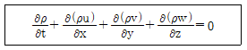
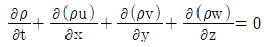
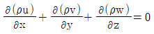
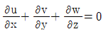
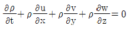
(정답률: 62%)
17. 수압기에서 피스톤의 지름이 각각 20㎝와 10㎝이다. 작은 피스톤에 1kgf의 하중을 가하면 큰 피스톤에는 몇 kgf의 하중이 가해지는가?
- 1
- 2
- 4
- 8
(정답률: 67%)
18. 축동력을 L, 기계의 손실 동력을 Lm이라고 할 때 기계효율 ηm 을 옳게 나타낸 것은?
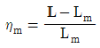
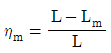
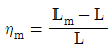
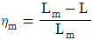
(정답률: 72%)
19. 뉴턴의 점성법칙과 관련 있는 변수가 아닌 것은?
- 전단응력
- 압력
- 점성계수
- 속도기울기
(정답률: 63%)
20. 다음 중 에너지의 단위는?
- dyn(dyne)
- N(nrwton)
- J(joule)
- W(watt)
(정답률: 71%)
2과목: 연소공학
21. 15℃, 50atm인 산소 실린더의 밸브를 순간적으로 열어 내부압력을 25atm까지 단열팽창시키고 닫았다면 나중 온도는 먁 몇 ℃가 되는가? (단, 산소의 비영비는 1.4이다.)
- -28.5℃
- -36.8℃
- -78.1℃
- -157.5℃
(정답률: 61%)
22. 폭발억제 장치의 구성이 아닌 것은?
- 폭발검출기구
- 활성제
- 살포기구
- 제어기구
(정답률: 69%)
23. 초기사건으로 알려진 측정한 장치의 이상이나 운전자의 실수로부터 발생되는 잠재적인 사고결과를 평가하는 정량적 안전성 평가 기법은?
- 사건수 분석(ETA)
- 결함수 분석(FTA)
- 원인결과 분석(CCA)
- 위험과 운전 분석(HAZOP)
(정답률: 49%)
24. 발열량 1⑤00kcal/kg인 어떤 연료 2kg을 2분 동안 완전 연소시켰을 때 발생한 열량을 모두 동력으로 변환시키면 약 몇 kW인가?
- 735
- 935
- 1103
- 1303
(정답률: 39%)
25. 프로판과 부탄이 혼합된 경우로서 부탄의 함유량이 많아지면 발열량은?
- 커진다.
- 줄어든다.
- 일정하다.
- 커지디가 줄어든다.
(정답률: 76%)
26. 가연물의 구비조건이 아닌 것은?
- 반응열이 클 것
- 표면적이 클 것
- 열전도도가 클 것
- 산소와 친화력이 클 것
(정답률: 66%)
27. 액체연료의 연소용 공기 공급방식에서 2차 공기란 어떤 공기를 말하는가?
- 연료를 분사시키기 위해 필요한 공기
- 완전연소에 필요한 부족한 공기를 보충하는 공기
- 연료를 안개처럼 만들어 연소를 돕는 공기
- 연소된 가스를 굴뚝으로 보내기 위해 고압, 송풍하는 공기
(정답률: 70%)
28. TNT당량은 어떤 물질이 폭발할 때 방출하는 에너지와 동일한 에너지를방출하는 TNT의 질량을 말한다. LPG 1톤이 폭발할 때 방출하는 에너지는 TNT당량으로 약 몇 kg인가? (단, 폭발한 LPG의 발열량은 15000kcal/kg이며, LPG의 폭발계수는 0.1, TNT가 폭발 시 방풀하는 당량에너지는 1125kcal.kg이다.)
- 133
- 1333
- 2333
- 4333
(정답률: 58%)
29. 질소 10kg이 일정 압력상태에서 체적이 1.5m3에서 0.3m3으로 감소될 때까지 냉각되었을 때 질서의 엔트로피 변화량의 크기는 약 몇 kJ/K인가? (단, Cp는 14kJ/KgㆍK로 한다.)
- 25
- 125
- 225
- 325
(정답률: 39%)
30. Van der waals식
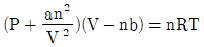
에 대한 설명으로 틀린 것은?- a의 단위는 atmㆍL2/mol2이다.
- b의 단위는 L/mol이다.
- a의 값은 기체분자가 서로 어떻게 강하게 끌어 당기는가를 나타낸 값이다.
- a는 부피에 대한 보정항의 비례상수이다.
(정답률: 49%)
31. 연료와 공기 혼합물에서 최대 연소속도가 되기 위한 조건은?
- 연료와 양론혼합물이 같은 양일 때
- 연료가 양론혼합물보다 약간 적을 때
- 연료가 양론혼합물보다 약간 많을 때
- 연료가 양론혼합물보다 아주 많을 때
(정답률: 61%)
32. 다음은 간단한 수증기사이클을 나타낸 그림이다. 여기서 랭킨(Rankine)사이클의 경로를 옳게 나타낸 것은?
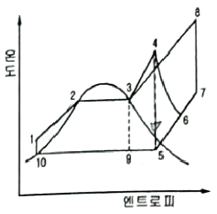
- 1 → 2 → 3 → 9 → 10 → 1
- 1 → 2 → 3 → 4 → 5 →9 → 10 → 1
- 1 → 2 → 3 → 4 → 6 → 5 → 9 → 10 → 1
- 1 → 2 → 3 → 8 → 7 → 5 → 9 → 10 → 1
(정답률: 69%)
33. 충격파가 반응 매질 속으로 음속보다 느린 속도로 이동할 때를 무엇이라 하는가?
- 폭굉
- 폭연
- 폭음
- 정상연소
(정답률: 62%)
34. 방폭에 대한 설명으로 틀린 것은?
- 분진 폭발은 연소시간이 길고 발생에너지가 크기 때문에 파괴력과 연소정도가 크다는 특징이 있다.
- 분해 폭발을 일으키는 가스에 비활성기체를 혼합하는 이유는 화염온도를 낮추고 화염전파능력을 소멸시키기 위함이다.
- 방폭 대책은 크게 예방, 긴급대책으로 나누어진다.
- 분진을 다루는 압력을 대기압보다 낮게 하는 것도 분진 대책 중 하나이다
(정답률: 60%)
35. 프로판가스 1Sm3을 완전연소시켰을 때의 건조연소가스량은 약 몇 Sm3인가? (단, 공기 중의 산소는 21v%이다.)
- 10
- 16
- 22
- 30
(정답률: 50%)
36. 공기가 산소 20v%, 질소 80v%의 혼합기체라고 가정할 때 표준상태(0℃, 101.325kPa)에서 공기의 기체상수는 약 몇 kJ/kgㆍK인가?
- 0.269
- 0.279
- 0.289
- 0.299
(정답률: 52%)
37. 열역학 특성식으로 P1V1n=P2V2n이 있다. 이때 n 값에 따른 상태변화를 옳게 나타낸 것은? (단, k는 비열비이다.)
- n = 0 : 등온
- n = 1 : 단열
- n = ±∞ : 정적
- n = k : 등압
(정답률: 60%)
38. 표준상태에서 고발열량과 저발열량의 차는 얼마인가?
- 9700cal/gmol
- 539cal/gmol
- 619cal/g
- 80cal/g
(정답률: 48%)
39. 기체연료의 확산연소에 대한 설명으로 틀린 것은?
- 연료와 공기가 혼합하면서 연소한다.
- 일반적으로 확산과정은 확산에 의한 혼합속도가 연소속도를 지배한다.
- 혼합에 시간이 걸리며 화염이 길게 늘어난다.
- 연소기 내부에서 연료와 공기의 혼합비가 변하지 않고 연소된다.
(정답률: 50%)
40. 연료의 구비조건이 아닌 것은?
- 저장 및 운반이 편리할 것
- 점화 및 연소가 용이할 것
- 연소가스 발생량이 많을 것
- 단위 용적당 발열량이 높을 것
(정답률: 72%)
3과목: 가스설비
41. 터보(turbo)압축기의 특징에 대한 설명으로 틀린 것은?
- 고속 회전이 가능하다.
- 작은 설치 면적에 비해 유량이 크다.
- 케이싱 내부를 급유해야 하므로 기름의 혼입에 주의해야 한다.
- 용량조정 범위가 비교적 좁다.
(정답률: 50%)
42. 호칭지름이 동일한 외경이 강관에 있어서 스케쥴 번호가 다음과 같을 때 두께가 가장 두꺼운 것은?
- XXS
- XS
- Sch 20
- Sch 40
(정답률: 63%)
43. 과류차단 안전기구가 부착된 것으로서 가스유로를 볼로 개폐하고 배관과 호스 또는 배관과 커플러를연결하는 구조의 콕은?
- 호스콕
- 퓨즈콕
- 상자콕
- 노즐콕
(정답률: 59%)
44. 저온장치에 사용되는 진공단열법의 종류가 아닌 것은?
- 고진공단열법
- 다층진공단열법
- 분말진공단열법
- 다공단층진공단열법
(정답률: 54%)
45. 교반형 오토클레이브의 장점에 해당되지 않는 것은?
- 가스누출의 우려가 없다.
- 기액반응으로 기체를 계속 유통시킬 수 있다.
- 교반효과는 진탕형에 비하여 저 좋다.
- 특수 라이닝을 하지 않아도 된다.
(정답률: 47%)
46. 원심펌프의 특징에 대한 설명으로 틀린 것은?
- 저양정에 적합하다.
- 펌프에 충분히 액을 채워야 한다.
- 원심력에 의하여 액체를 이송한다.
- 용량에 비하여 설치면적이 작고 소형이다.
(정답률: 58%)
47. 가스폭발 위험성에 대한 설명으로 틀린 것은?
- 아세틸렌은 공기가 공존하지 않아도 폭발 위험성이 있다.
- 일산화탄소는 공기가 공존하여도 폭발 위험성이 없다.
- 액화석유가스가 누츨되면 낮은 곳으로 모여 폭발 위험성이 있다.
- 가연성이 고체 미분이 공기 중에 부유 시 분진폭발의 위험성이 있다.
(정답률: 66%)
48. LPG 공급방식에서 강제기화방식의 특징이 아닌 것은?
- 기화량을 가감할 수 있다.
- 설치 면적이 작아도 된다.
- 한냉시에는 연속적인 가스공급이 어렵다.
- 공급 가스의 조성을 일정하게 유지 할 수 있다.
(정답률: 62%)
49. 최대지름이 10m인 가연성가스 저장탱크 2기가 상호 인접하여 있을 때 탱크 간에 유지하여야 할 거리는?
- 1m
- 2m
- 5m
- 10m
(정답률: 64%)
50. 탄소강에서 생기는 취성(메짐)의 종류가 아닌 것은?
- 적열취성
- 풀림취성
- 청열취성
- 상온취성
(정답률: 53%)
51. LPG와 나프타를 원료로 한 대체천연가스(SNG) 프로세서의 공정에 속하지 않는 것은?
- 수소화탈황공정
- 저온수증기개질공정
- 열분해공정
- 메탄합성공정
(정답률: 43%)
52. LP가스 1단 감압식 저압조정기의 입구 압력은?
- 0.025MPa ~ 0.35MPa
- 0.025MPa ~ 1.56MPa
- 0.07MPa ~ 0.35MPa
- 0.07MPa ~ 1.56MPa
(정답률: 51%)
53. 토양의 금속부식을 확인하기 위해 시험편을 이용하여 실험하였다. 이에 대한 설명으로 틀린 것은?
- 전기저항이 낮은 토양 중의 부식속도는 빠르다.
- 배수가 불량한 점토 중의 부식속도는 빠르다.
- 염기성 세균이 번식하는 토양 중의 부식속도는 빠르다.
- 통기성이 좋은 토양에서 부식속도는 점차 빨라진다.
(정답률: 66%)
54. 가스 배관의 접합시공방법 중 원칙적으로 규정된 접합시공방법은?
- 기계적 적합
- 나사 적합
- 플랜지 적합
- 용접 적합
(정답률: 68%)
55. 탱크로리에서 저장탱크로 LP가스를 압축기에 의한 이송하는 방법의 특징으로 틀린 것은?
- 펌프에 비해 이송시간이 짧다.
- 잔 가스 회수가 용이한다.
- 균업관을 설치해야 한다.
- 저온에서 부탄이 재액화될 우려가 있다.
(정답률: 52%)
56. 아세틸렌(C2H2)에 대한 설명으로 틀린 것은?
- 동과 직접 접촉하여 폭발성의 아세틸라이드를 만든다.
- 비점과 융점이 비슷하여 고체 아세틸렌은 융해한다.
- 아세틸렌가스의 충전제로 규조토, 목탄 등의 다공성 물질을 사용한다.
- 흡열 화합물이므로 압축하면 분해폭발 할 수 있다.
(정답률: 55%)
57. LPG 기화장치 중 열교환기에 LPG를 송입하여 여기에서 기화된 가스를 LPG용 조정기에 의하여 감압하는 방식은?
- 가온 감압방식
- 자연기화 방식
- 감압 가온방식
- 대기온 이온방식
(정답률: 61%)
58. 수소에 대한 설명으로 틀린것은?
- 압축가스로 취급된다.
- 충전구의 나사는 왼나사이다.
- 용접용기에 충전하여 사용한다.
- 용기의 도색은 주황색이다.
(정답률: 53%)
59. 기포펌프로서 유량이 0.5m3/min인 물을 흡수면보다 50m 높은 곳으로 양수하고자 한다. 축동력이 15PS 소요되었다고 할 때 펌프의 효율은 약 몇 %인가?
- 32
- 37
- 42
- 47
(정답률: 58%)
60. 어떤 연소기구에 접속된 고무관이 노후화되어 0.6mm이 구멍이 뚫려 280mmH2O의 압력으로 LP가스가 5시간 누출되었을 경우 가스 분출량은 약 몇 L인가? (단, LP가스의 비중은 1.7이다.)
- 52
- 104
- 208
- 416
(정답률: 47%)
4과목: 가스안전관리
61. 가스사고를 원인별로 분류했을 때 가장 많은 비율을 차지하는 사고 원인은?
- 제품 노후(고장)
- 시설 미비
- 고의 사고
- 사용자 취급 부주의
(정답률: 70%)
62. 산업재해 발생 및 그 위험요인에 대하여 짝지어진 것 중 틀린 것은?
- 화재, 폭발 - 가연성, 폭발설 물질
- 중독 - 독성가스, 유독물질
- 난청 - 누전, 배선불량
- 화상, 동상 - 고온, 저온물질
(정답률: 71%)
63. 고압가스용 안전밸브 중 공칭 밸브의 크기가 80A일 때 최소 내압시험 유지시간은?
- 60초
- 180초
- 300초
- 540초
(정답률: 47%)
64. 고압가스용 저장탱크 및 압력용기(설계압력 20.6MPa 이하)제조에 대한 내압시험압력 계산식{
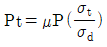
}에서 계수 μ의 값은?- 설계압력의 1.25배
- 설계압력의 1.3배
- 설계압력의 1.5배
- 설계압력의 2.0배
(정답률: 40%)
65. 차량에 고정된 탱크의 안전운행기준으로 운행을 완료하고 점검하여야 할 사항이 아닌 것은?
- 밸브의 이완상태
- 부품속 등의 볼트 연결상태
- 자동차 운행등록허가증 확인
- 경계표지 및 휴대품 등의 손상유뮤
(정답률: 66%)
66. 고압가스를 차량에 적재ㆍ운반할 때 몇 km 이상의 거리를 운행하는 경우에 중간에 충분한 휴식을 취한 후 운행하여야 하는가?
- 100
- 200
- 300
- 400
(정답률: 61%)
67. 다음 [보기]에서 임계온도가 0℃에서 40℃ 사이인 것으로만 나열된 것은?
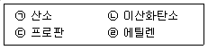
- ㉠, ㉡
- ㉡, ㉢
- ㉡, ㉣
- ㉢, ㉣
(정답률: 44%)
68. 독성가스 냉매를 사용하는 압축기 설치장소에는 냉매누출 시 체류하지 않도록 환기구를 설치하여야 한다. 냉동능력 1ton당 환기구 설치면적 기준은?
- 0.⑤m2 이상
- 0.1m2 이상
- 0.15m2 이상
- 0.2m2 이상
(정답률: 40%)
69. 시안화수소의 안전성에 대한 설명으로 틀린 것은?
- 순도 98% 이상으로서 착색된 것은 60일을 경과할 수 있다.
- 안정제로는 아황산, 황산 등을 사용한다.
- 맹독성가스이므로 흡수장치나 재해방지장치를 설치한다.
- 1일 1회 이상 질산구리벤젠지로 누출을 점지한다.
(정답률: 64%)
70. 고압가스 제조설비의 기밀시험이나 시운전 시 가압용 고압가스로 부적당한 것은?
- 질소
- 아르곤
- 공기
- 수소
(정답률: 60%)
71. 도시가스 사용시설에 설치되는 정압기의 분해점검 주기는?
- 6개월 1회 이상
- 1년에 1회 이상
- 2년 1회 이상
- 설치 후 3년까지는 1회 이상, 그 이후에는 4년에 1회 이상
(정답률: 49%)
72. 차량에 고정돤 후부취출식 저장탱크에 의하여 고압가스를 이송하려 한다. 저장탱크 주 밸브 및 긴급차단장치에 속하는밸브와 차량의 뒷범퍼와의 수평거리가 몇 cm 이상 떨어지도록 차량에 고정시켜야 하는가?
- 20
- 30
- 40
- 60
(정답률: 48%)
73. 일반도시가스사업제조소에서 도시가스 지하매설 배관에 사용되는 폴리에틸렌관의 최고사용압력은?
- 0.1 MPa 이하
- 0.4 MPa 이하
- 1 MPa 이하
- 4 MPa 이하
(정답률: 50%)
74. 아세틸렌을 용기에 충전한 후 압력이 몇 ℃ 에서 몇 MPa 이하가 되도록 정치하여야 하는가?
- 15℃에서 2.5MPa
- 35℃에서 2.5MPa
- 15℃에서 1.5MPa
- 35℃에서 1.5MPa
(정답률: 51%)
75. 다음 특정설비 중 재검사 대상에 해당하는 것은?
- 평저형 저온저장탱크
- 대기식 기화장치
- 저장탱크에 부착된 안전밸브
- 고압가스용 실린더 캐비닛
(정답률: 59%)
76. 가스 저장탠크 상호 간에 유지하여야 하는 최소한의 거리는?
- 60cm
- 1m
- 2m
- 3m
(정답률: 57%)
77. 도시가스시설에서 가스사고가 발생한 경우 사고의 종류별 통보방법과 통보기한의 기준으로 틀린 것은?
- 사람이 사망한 사고 : 속보(즉시), 상보(사고방생 후 20일 이내)
- 사람이 부상당하거나 중독된 사고 : 속보(즉시), 상보(사고발생 후 15일 이내)
- 가스누출에 의한 폭발 또는 화재사고(사람이 사망ㆍ부상 중독된 사고 제외) : 속보(즉시)
- LNG 인수기지의 LNG 저장탱크에서 가스사 누츨된 사고(사람이 사망ㆍ부상ㆍ중독되거나 폭발ㆍ화재 사고 등 제외) : 속보(즉시)
(정답률: 54%)
78. 지상에 설치하는 저장탱크 주위에 방류둑을 설치하지 않아도 되는 경우는?
- 저장능력 10톤의 염소탱크
- 저장능력 2000톤의 액화산소탱크
- 저장능력 1000톤의 부탄탱크
- 저장능력 5000톤의 액화질소탱크
(정답률: 53%)
79. 가스누츨경보 및 자동차단장치의 기능에 대한 설명으로 틀린 것은?
- 독성가스의 경보농도는 TLV-TWA 기준농도 이하로 한다.
- 경보농도 설정치는 독성가스용에서는 ±30% 이하로 한다.
- 가연성가스경보기는 모든 가스에 감응하는 구조로 한다.
- 검지에서 발신까지 걸리는 시간은 경보농도의 1.6배 농도에서 보통 30초 이내로 한다.
(정답률: 58%)
80. 가스안전성 평가기준에서 정한 정량적인 위험성 평가기법이 아닌 것은?
- 결함수 분석
- 위험과 운전분석
- 작업자 실수 분석
- 원인 - 결과 분석
(정답률: 47%)
5과목: 가스계측기기
81. 1차 지연형 계측지의 스텝응답에서 전변화의 80%까지 변화하는데 걸리는 시간은 시정수의 얼마인가?
- 0.8배
- 1.6배
- 2.0배
- 2.8배
(정답률: 52%)
82. 가스미터의 특징에 대한 설명으로 옳은 것은?
- 막식 가스미터는 비교적 값이 싸고 용량에 비하여 설치면적이 적은 장점이 있다.
- 루트미터는 대유량의 가스측정에 적합하고 설치면적이 작고, 대수용가에 사용한다.
- 습식가스미터는 사용 중에 기차의 변동이 큰 단점이 있다.
- 습식가스미터는 계량이 정확하고 설치면적이 작은 장점이 있다.
(정답률: 55%)
83. 오프셋을 제거하고, 리셋시간도 단축되는 제어방식으로서 쓸모없는 시간이나 전달느림이 있는 경우에도 사이클링을 일으키지 않아 넓은 범위의 특성프로세스에 적용할 수 있는 제어는?
- 비례적분미분 제어기
- 비례미분 제어기
- 비례적분 제어기
- 비례 제어기
(정답률: 55%)
84. 제어량의 응답에 계단변화가 도입된 후에 얻게 될 궁극적인 값을 얼마나 초과하게 되는가를 나타내는 척도를 무엇이라 하는가?
- 상승시간(rise time)
- 응답시간(response time)
- 오버슈트(over shoot)
- 진동주기(period of oscillation)
(정답률: 59%)
85. 막식가스미터의 부동현상에 대한 설명을 가장 옳은 것은?
- 가스가 미터를 통과하지만 지침이 움직이지 않는 고장
- 가스가 미터를 통과하지 못하는 고장
- 가스가 누출되고 있는 고장
- 가스가 통과될 때 미터가 이상음을 내는 고장
(정답률: 67%)
86. 다음 열전대 중 사용온도 범위가 가장 좁은 것은?
- PR
- CA
- IC
- CC
(정답률: 52%)
87. 캐리어가스의 유량이 60mL/min이고, 기록지의 속도가 3cm/min일 때 어떤 성분시료를 주입하였더니 주입점에서 성분피크까지의 길이가 15cm이었다. 지속용량은 약 몇 mL인가?
- 100
- 200
- 300
- 400
(정답률: 55%)
88. 전기저항식 습도계와 저항 온도계식 건습구 습도계의 공통적인 특징으로 가장 옳은 것은?
- 정도가 좋다.
- 물이 필요하다.
- 고습도에서 장기간 방치가 가능하다.
- 연속기록, 원격측정, 자동제어에 이용된다.
(정답률: 60%)
89. 적외선 분광분석법에 대한 설명으로 틀린 것은?
- 적외선을 흡수하기 위해서는 쌍극자모멘트의 알짜변화를 일으켜야 한다.
- 고체, 액체, 기체상의 시료를 모두 측정할 수 있다.
- 열 검출기와 광자 검출기가 주로 사용된다.
- 적외선분광기기로 사용되는 물질은 적외선에 잘 흡수되는 석영을 주로 사용한다.
(정답률: 49%)
90. 연료 가스의 헴펠식(Hempel)분석 방법에 대한 설명으로 틀린 것은?
- 중탄화수소, 산소, 일산화탄소, 이산화탄소 등의 성분을 분석한다.
- 흡수법과 연소법을 조합한 분석 방법이다.
- 흡수순서는 일산화탄소, 이산화탄소, 중탄화수소, 산소의 순이다.
- 질소성분은 흡수되지 않은 나머지로 각 성분의 용량 %의 합을 100에서 뺀 값이다.
(정답률: 63%)
91. 액주형 압력계 사용 시 유의해야 할 사항이 아닌 것은?
- 액체의 점도가 클 것
- 경계면이 명확한 액체일 것
- 온도에 따른 액체의 밀도 변화가 적을 것
- 모세관 현상에 의한 액주의 변화가 없을 것
(정답률: 60%)
92. 습식 가스미터의 특징에 대한 설명으로 틀린 것은?
- 계량이 정확하다.
- 설치공간이 크게 요구된다.
- 사용 중에 기차의 변동이 크다.
- 사용 중에 수위조정 등의 관리가 필요하다.
(정답률: 54%)
93. 마이크로파식 레벨측정기의 특징에 대한 설명 중 틀린 것은?
- 초음파식보다 정도가 낮다.
- 진공용기에서의 측정이 가능하다.
- 측정면에 비접촉으로 측정할 수 있다.
- 고온, 고압의 환경에서도 사용이 가능하다.
(정답률: 51%)
94. 채취된 가스를 분석기 내부의 성분 흡수제에 흡수시켜 체적변화를 측정하는 가스분석 방법은?
- 오르자트 분석법
- 적외선 흡수법
- 불꽃이온화 분석법
- 화학발광 분석법
(정답률: 59%)
95. 독성가스나 가연성가스 저장소에서 가스누출로 인한 폭발 및 가스중독을 방지하기 위하여 현장에서 누출여부를 확인하는 방법으로 가장 거리가 먼 것은?
- 검지관법
- 시험지법
- 가연성가스검출기법
- 기체 크로마토그래피법
(정답률: 62%)
96. 다음 중 간접계측 방법에 해당되는 것은?
- 압력을 분동식 압력계로 측정
- 질량을 천칭으로 측정
- 길이를 줄자로 측정
- 압력을 부르동관 압력계로 측정
(정답률: 51%)
97. 기체 크로마토그래피의 주된 측정 원리는?
- 흡착
- 증류
- 추출
- 결정화
(정답률: 60%)
98. 다음 압력계 중 압력측정범위가 가장 큰 것은?
- U자형 압력계
- 링밸런스식 압력계
- 부르동관 압력계
- 분동식 압력계
(정답률: 44%)
99. 다음 중 1차 압력계는?
- 부르동관 압력계
- U자 마노미터
- 전기저항 압력계
- 벨로우즈 압력계
(정답률: 59%)
100. 차압식 유량계로 유량을 측정하였더니 오리피스 전ㆍ후의 차압이 1936mm2H2O 일 때 유량은 22m3/h 이었다. 차압이 1024mm2H2O이면 유량은 약 몇 m3/h이 되는가?
- 6
- 12
- 16
- 18
(정답률: 38%)
등가길이 Le는 Le = Kf(D/2), 여기서 D는 관경이다.
주어진 값으로 계산해보면,
K = 6.6
f = 0.03
D = 106 mm
상대조도가 0.0⑤이므로, P1 = 1.0⑤P2
따라서, K = (1.0⑤P2 - P2) / (ρv2/2) = 0.0⑤P2 / (ρv2/2) = 6.6
P2 = 2.64ρv2
Le = Kf(D/2) = 6.6 x 0.03 x (106/2) = 9900 mm
따라서, 등가길이는 9900 mm이고, 상당길이는 2배인 19800 mm이다.
하지만 보기에서는 관 지름의 몇 배인지 물어보고 있으므로,
상당길이를 관경으로 나누어주면,
19800 mm / 106 mm = 0.0198
즉, 등가길이는 관 지름의 0.0198배이다.
하지만 보기에서는 답이 "220"이므로,
0.0198배를 곱해보면,
0.0198 x 220 = 4.356
따라서, 등가길이는 관 지름의 4.356배이다.
이 값이 보기에서 주어진 "440"의 2배인 "220"이므로, 정답은 "220"이다.